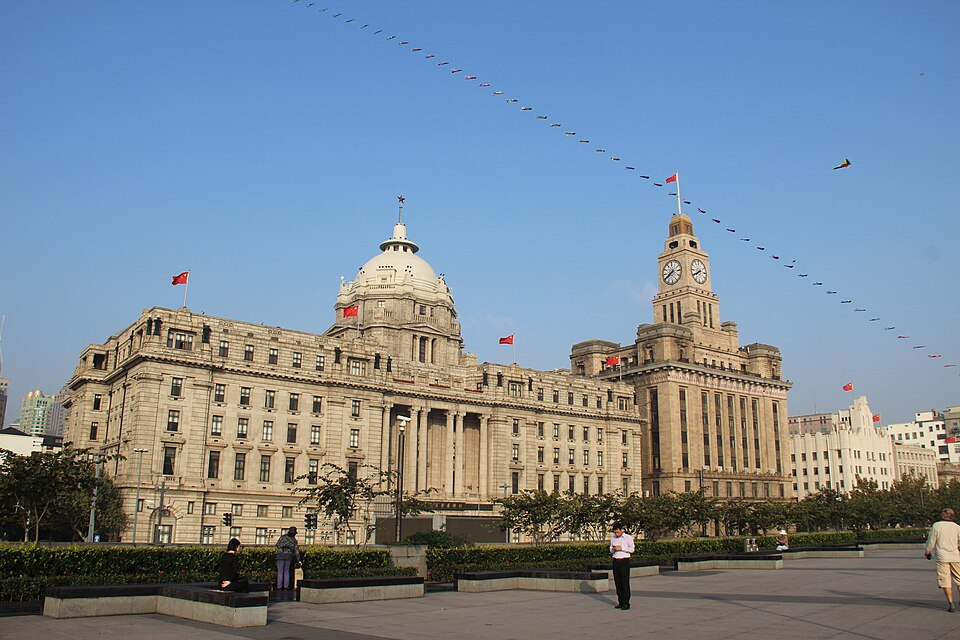
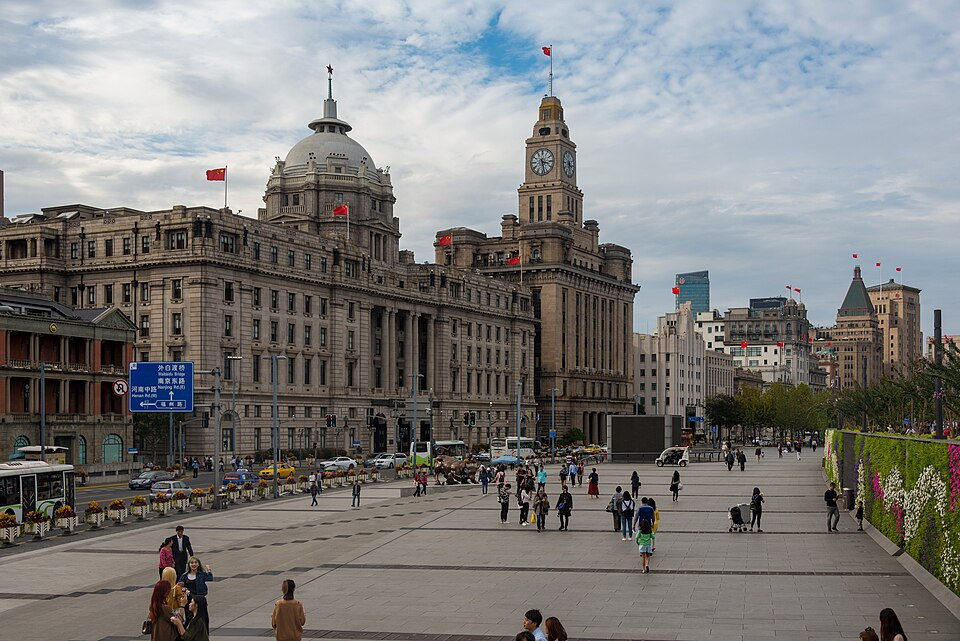
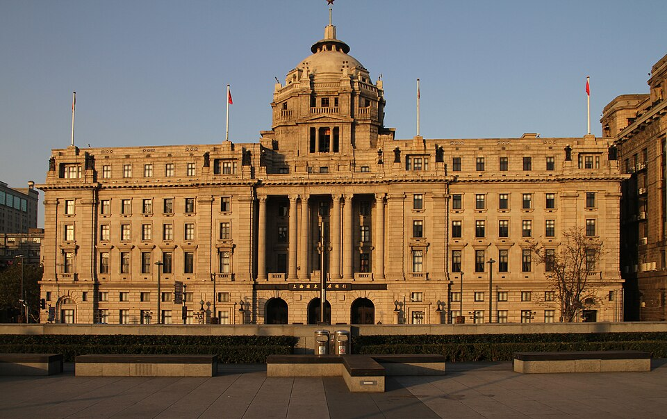
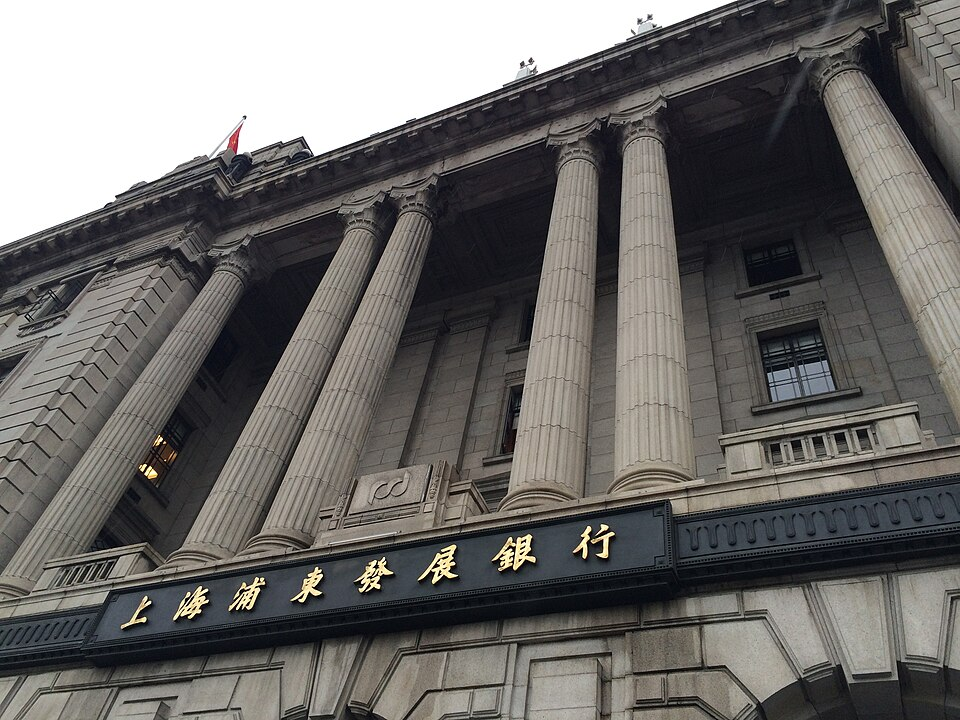
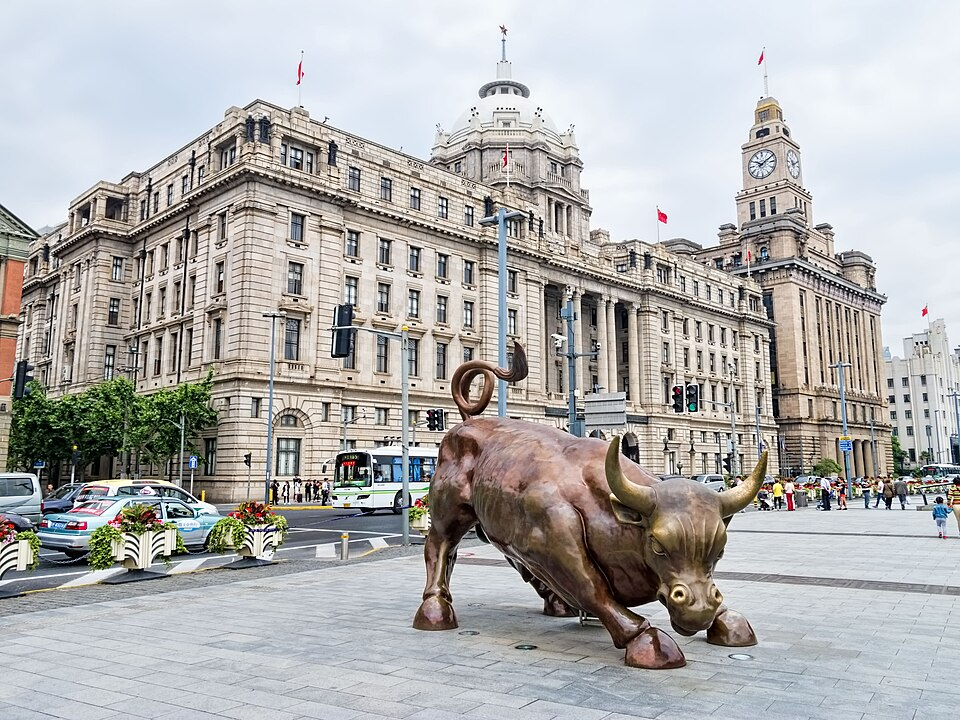

3Набережная Bund
外滩 · Банки и конторы 1920-30-х вдоль реки


_%26_Customs_House,_1927_(right).jpg){kind=link}












С 1860-х по 1930-е здесь был финансовый центр иностранных концессий Шанхая. Вдоль улицы Zhongshan East 1st Road стоят здания в стилях неоклассики, ар-деко, барокко и готики, напротив через реку - небоскрёбы Lujiazui.
Самые узнаваемые - бывшее здание банка HSBC (1923) с куполом и Таможня с часовой башней рядом. Вдоль домов идёт широкий приподнятый променад у воды.
| Вход | бесплатно, всегда открыто |
|---|---|
| Прогулка | от южного конца до Peace Hotel 1,1 км (15 мин), ещё 8 мин до моста Waibaidu |
Источник: Wikipedia (The Bund); расстояния - OSRM. Проверено 27.10.2026 02:34 по Шанхаю.
Как добраться
- От Yu Garden 10 мин пешком до южного конца набережной.
- Такси: 和平饭店 · 南京东路20号 (Peace Hotel, середина набережной).
Рядом

4. Мост WaibaiduСтальной мост 1908 года в конце Bund

5. Набережная Lujiazui: вид на BundДругой берег: Bund через реку, закат за ним
Фото: Wikimedia Commons, автор и лицензия под каждым. Пешие отрезки и такси: OSRM. ← ко всему плану